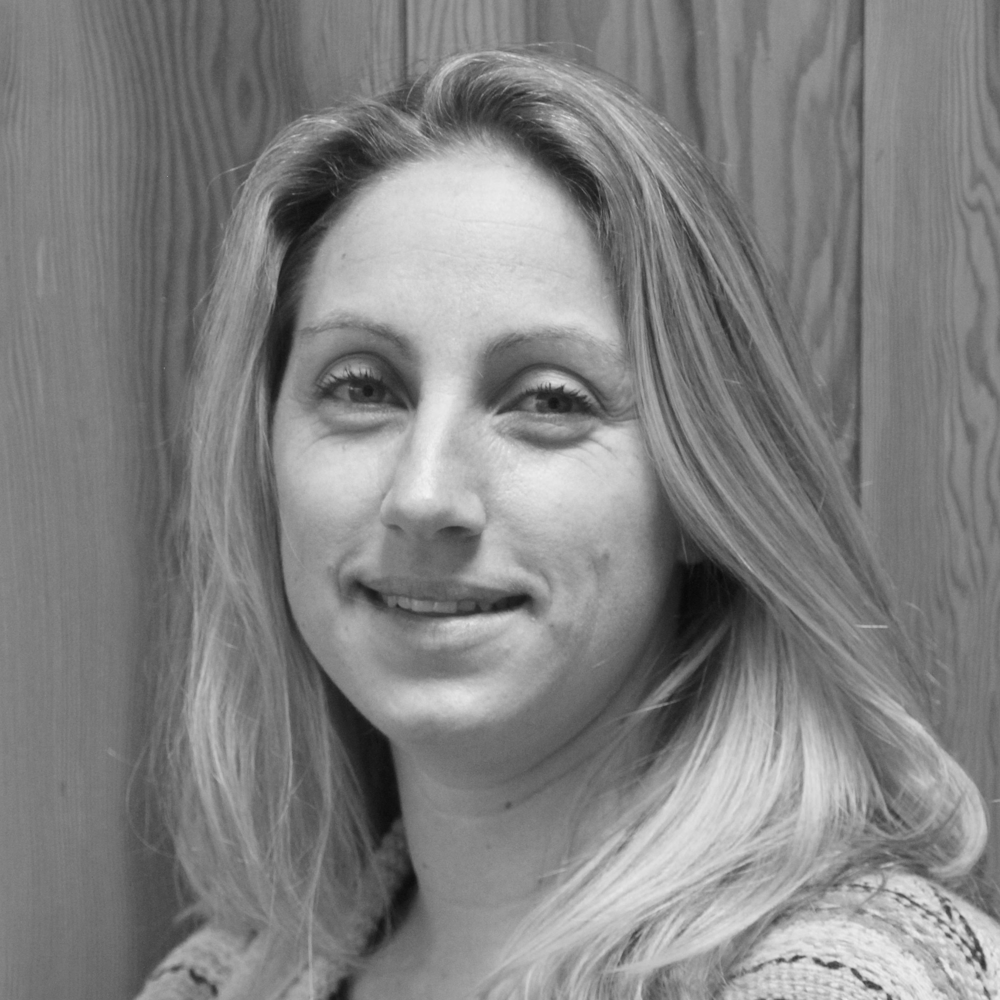
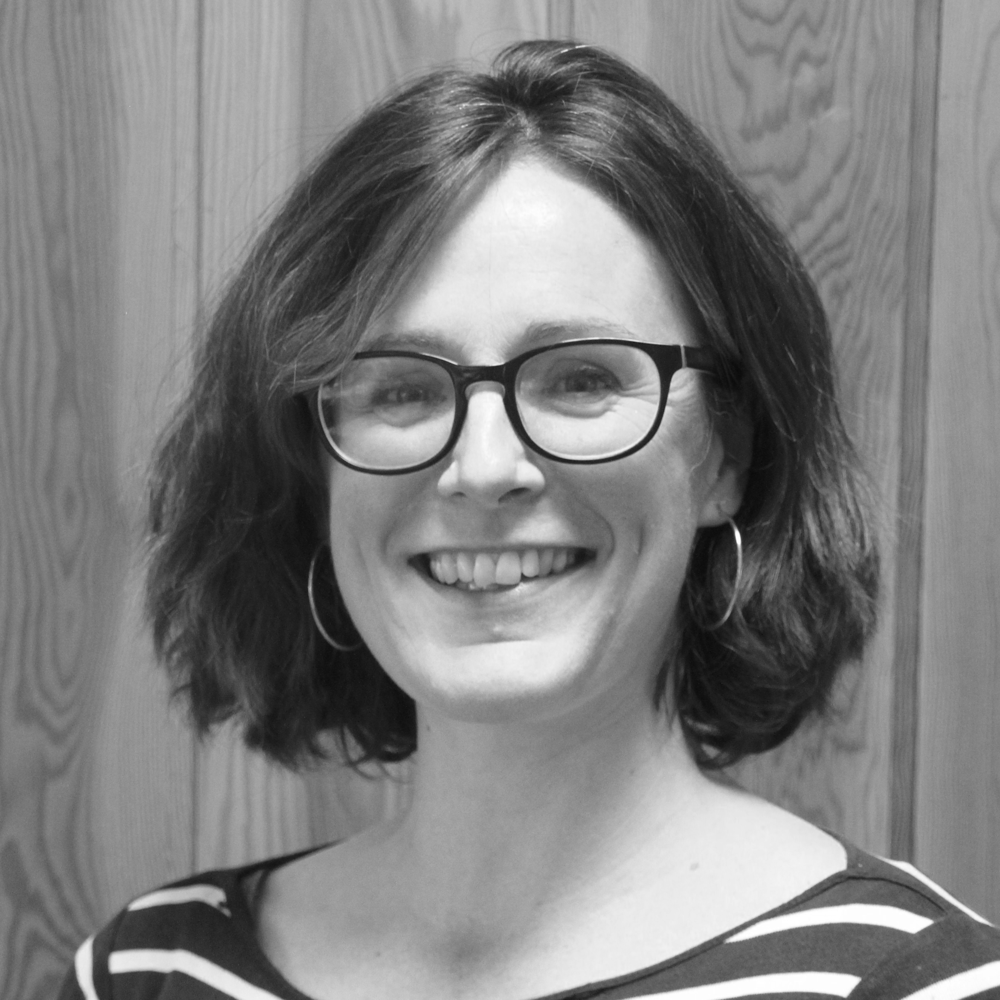

Matt Jones - Principal Investigator

Professor Matt Jones is the Principal Investigator for the CHERISH-De project. He is passionate about extending the Digital Economy work pioneered in the UK, and is engaged in shaping research in mobile and ubiquitous HCI. He has been Visiting Fellow at Nokia Research Finland, and an IBM Faculty Award recipient for work on the Spoken Web. He received a Royal Society Wolfson Research merit Award (2014 – 2019) in recognition of his work in developing markets.
Clare Henson - Project Manager

Clare oversees the planning, organization and reporting of the centre in collaboration with Professor Matt Jones and the project’s Steering Group. Clare’s background in Project Management within Higher Education Institutes is significant, and she has successfully managed European funded projects at Swansea University for the last four years.
Rhiannon Egerton - User Engagement Officer

Rhiannon is responsible for communicating the opportunities offered by the centre to third party project partners and possible collaborators. She is also the main point of contact for academic and research staff at Swansea University with regards to CHERISH-DE funding opportunities. Her background is in marketing and training & development.
Tashi Gyaltsen - Project Officer
Tashi is the Project Officer at CHERISH-DE Centre, and provides administrative and project management support to the team. He previously worked as a Project Manager in the international development arm of the BBC based in London.
Cinzia Giannetti - Postdoctoral Research Assistant
Cinzia provides research development support and technical expertise for projects funded by the Centre. Cinzia has a passion in developing effective, reliable and usable digital product and services that can have a transformational impact on our lives and the society. She has a strong background in Software Engineering acquired both in commercial and academic environments, with experience in design and development of prototypes in collaboration with a wide range of stakeholders in Universities, SME and large organisations.
Project Investigators' Homepages
Principal Investigator - Prof. Matt Jones
Co-Investigator - Dr. Markus Roggenbach
Co-Investigator - Prof. David Ford
Co-Investigator - Prof. Judith Phillips
Co-Investigator - Dr. Stuart Macdonald
Co-Investigator - Prof. Huw Bowen
Co-Investigator - Prof. Harold Thimbleby